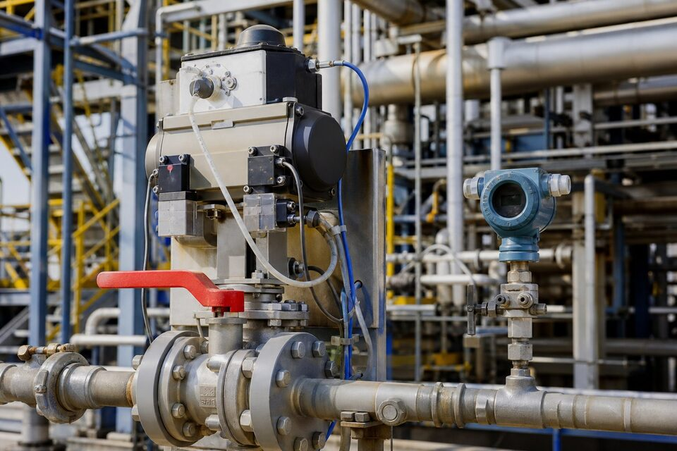

مفهوم (SIL) و چرایی آن
در صنایع فرایندی، برخی حلقههای ابزار دقیق وظیفهای فراتر از کنترل دارند: آنها آخرین محافظ در برابر حادثهاند. وقتی سنسور فشار بالا باید حتماً عمل کند و اگر عمل نکند حادثهای جدی رخ میدهد، نمیتوان به یک تجهیز معمولی اکتفا کرد. (SIL) پاسخ صنعت به این نیاز است: سطحبندی کمّی احتمال شکست تابع ایمنی، به همراه الزامات مشخص برای طراحی، انتخاب، نصب، آزمون و نگهداری. سطوح بالاتر یعنی احتمال شکست کمتر و الزامات سختگیرانهتر؛ بنابراین تعیین سطح، یک تصمیم مهندسی مبتنی بر تحلیل ریسک است نه انتخاب سلیقهای.

مراجع و سطوح
مراجع اصلی، خانواده استانداردهای ایمنی کارکردی هستند که الزامات چرخه عمر ایمنی را از تحلیل ریسک تا بهرهبرداری پوشش میدهند: یکی برای صنایع عمومی و دیگری به طور خاص برای صنایع فرایندی. سطوح معمولاً از یک تا سه تعریف میشوند و هر سطح، بازه مشخصی از احتمال شکست در انجام تابع ایمنی را نمایندگی میکند. نکته کلیدی این است که سطح ایمنی به کل حلقه تعلق دارد — سنسور، منطق و عنصر نهایی — و هر جزء باید سهم خود از الزامات را برآورده کند؛ یک جزء ضعیف، سطح کل حلقه را پایین میآورد.
تجهیزات مناسب حلقه ایمنی
- سنسورها با آمار خرابی شناختهشده و طراحی مقاوم در برابر شکست.
- منطقحلهای اختصاصی ایمنی با معماری افزونه و رایگیری.
- عناصر نهایی مانند شیرهای قطع اضطراری با قابلیت آزمون دورهای.
- تجهیزات دارای مدارک ارزیابی یا گواهی متناسب سطح موردنیاز.
- امکان آزمون حرکتی دورهای بدون توقف فرایند در بسیاری طرحها.
الزامات خرید تجهیزات ایمنی
در استعلام تجهیز برای حلقه ایمنی، سطح ایمنی موردنیاز، معماری حلقه و الزامات آزمون دورهای باید ذکر شود. مدارک انطباق نیز اهمیت ویژه دارند: اطلاعات آمار خرابی، ارزیابیهای مستقل و دستورالعملهای آزمون باید قابل ارائه باشند. در پروژههای دارای وندورلیست، تایید برند و مدل برای استفاده ایمنی باید پیش از سفارش انجام شود؛ چون جایگزینی پس از طراحی، ممکن است نیازمند تحلیل مجدد باشد. توجه داشته باشید که نصب، سیمکشی و برنامه آزمون دورهای نیز بخشی از الزامات هستند و خرید تجهیز مناسب به تنهایی کافی نیست.
یک نکته عملی نیز مهم است: در بسیاری پروژهها، بخشی از تجهیزات حلقه ایمنی، شیرهای قطع اضطراری و سنسورهای فشار و دما هستند که با برندهای رایج نیز قابل تهیهاند؛ تفاوت اصلی در مدارک انطباق، آمار خرابی و برنامه آزمون دورهای است. بنابراین هنگام مقایسه پیشنهادها، قیمت تجهیزات را همراه با مدارک ایمنی و الزامات آزمون ارزیابی کنید تا تصویر واقعی هزینه چرخه عمر مشخص شود.
جمعبندی
(SIL) زبان مشترک ایمنی در ابزار دقیق است: سطح ایمنی در تحلیل ریسک تعیین، در خرید الزام و در بهرهبرداری با آزمون حفظ میشود. با ذکر سطح موردنیاز و مطالبه مدارک انطباق، میتوان تجهیزاتی تهیه کرد که در لحظه نیاز، با احتمال شکست قابل قبول عمل کنند و محافظ جان انسان و سرمایه باشند.
سوالات رایج
(SIL) چیست؟
سطح یکپارچگی ایمنی: معیاری برای احتمال شکست یک تابع ایمنی در انجام وظیفهاش. هرچه سطح بالاتر، احتمال شکست کمتر و الزامات طراحی و اثبات سختگیرانهتر.
چرا تجهیزات حلقه ایمنی با تجهیزات معمولی فرق دارند؟
چون باید احتمال شکست آنها به صورت کمّی اثبات شود؛ طراحی، آمار خرابی، آزمونهای دورهای و معماری افزونه در آنها بر اساس مراجع استاندارد کنترل و مستند میشود.
آیا هر ترانسمیتری میتواند در حلقه ایمنی استفاده شود؟
خیر؛ تجهیز باید برای استفاده در توابع ایمنی متناسب سطح مورد نیاز ارزیابی یا گواهی شده باشد و مدارک آن در دسترس باشد. استفاده از تجهیز معمولی در حلقه (SIL) پذیرفته نیست.
مسئول تعیین سطح (SIL) با کیست؟
با طراحی و تحلیل ریسک پروژه؛ خریدار باید سطح تعیینشده را در استعلام ذکر کند و سازنده، انطباق تجهیز با آن سطح را اثبات نماید.
مطالب مرتبط
با ذکر سطح ایمنی موردنیاز و تابع ایمنی، تجهیزات متناسب با مدارک انطباق عرضه میشوند.
مشاهده صفحه محصول ← ثبت RFQ همین محصولتامین این تجهیزات را به پیشرو تجهیز فرتاک بسپارید
شرکت پیشرو تجهیز فرتاک تامینکننده تخصصی تجهیزات صنعتی برای پروژههای نفت، گاز، پتروشیمی، فولاد و نیروگاهی است. برای دریافت پیشنهاد فنی و قیمت، استعلام (RFQ) خود را ثبت کنید تا کارشناسان مهندسی فروش در کوتاهترین زمان پاسخ دهند.
- تامین ابزار دقیقترانسمیترها و آنالایزرهای برندهای معتبر
- تامین تجهیزات صنایع نفت و گازپکیج مواد مطابق وندورلیست